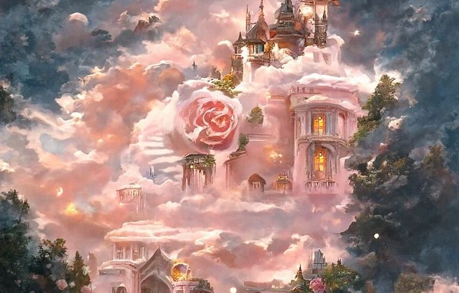
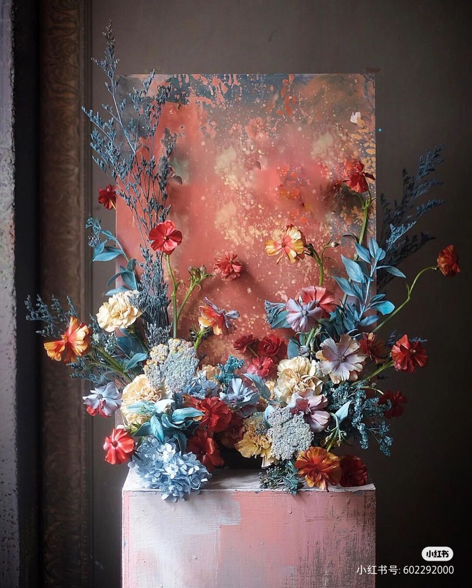

About me? About you!

恶人是不会简单的死的，因为上帝似乎还要关照他们，他要用他们来作他报复的工具。
世界上无所谓幸福，也无所谓不幸，只有一种境况与另一种境况相比较。只有那些曾经在大海里抱着木板经受凄风苦雨的人，
才能体会到幸福有多么的可贵。尽情的享受生命的快乐吧，永远记住，在上帝揭开人类未来的图景前，人类的智慧就包含在两个词中:等待和希望。
——大仲马《基督山伯爵》
当你拼命想完成一件事的时候，你就不再是别人的对手，或者说得更确切一些，别人就不再是你的对手了，不管是谁，只要下了这个决心，他就会立刻觉得增添了无穷的力量，而他的视野也随之开阔了。
——大仲马《基督山伯爵》
插花艺术（ikebana），常简称为插花（floarr），即指将剪切下来的植物的枝、叶、花、果作为素材，经过一定的技术（修剪、整枝、弯曲等）和艺术（构思、造型、设色等）加工，重新配置成一件精制、
富有诗情画意，能再现大自然美和生活美的花卉作品的艺术形式。插花艺术的起源应归于人们对花卉的热爱，
通过对花卉的定格，表达一种意境来体验生命的真实与灿烂。插花艺术对中国人而言，插花作品被视为一个天人合一的宇宙生命之融合。
中国在近2000年前已有了原始的插花意念和雏形。插花到唐朝时已盛行起来，并在宫廷中流行，在寺庙中则作为祭坛中的佛前供花。宋朝时期插花艺术已在民间得到普及，并且受到文人的喜爱，各朝关于插花欣赏的诗词很多。
至明朝，我国插花艺术不仅广泛普及，并有插花专著问世，如张谦德著有《瓶花谱》，袁宏道著《瓶史》等。中国插花艺术发展到明朝，已达鼎盛时期，在技艺上、理论上都相当成熟和完善；
在风格上，强调自然的抒情，优美朴实的表现，淡雅明秀的色彩，简洁的造型。清朝插花艺术在民间却得不到重视、发 展和普及。
公元六世纪时，推古天皇派特使（相当与我们所知的外交官）小野妹子到中国做文化交流亲善访问，他回日本时带了很多中国的字画、雕刻、文学、戏剧还有园艺及供佛的瓶花等。小野妹子是一位出家人，住在京都六角堂小池塘旁的顶法寺，日本第一个插花作品即在此完成。从此日本有了插花学校的兴起。名称叫作“池坊”，乃源于池旁之意。池坊是日本最古老原始的插花学校，当前的负责人是池坊第四十五代——池坊专永先生。
